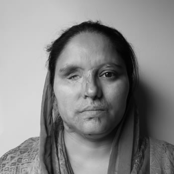
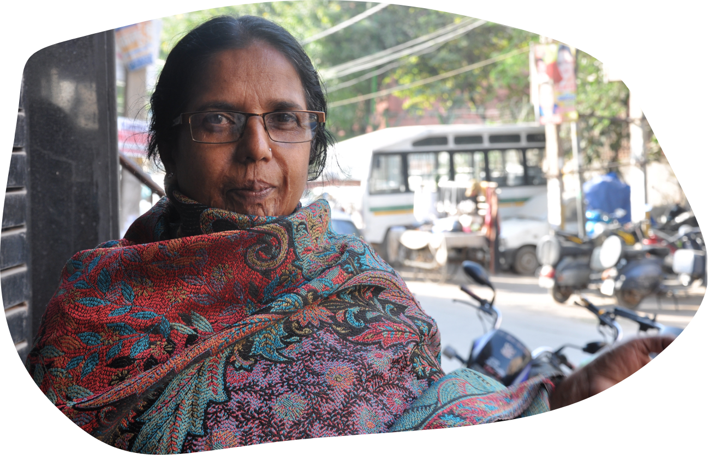

Against the Odds
Over the years, many of the survivors faced trauma but eventually lived a journey to their triumph. Let's have a look at some touching realities.
In between this difficult COVID-19 time, we understand that the lives of everyone, along with acid attack survivors have pressed a pause button.
Therefore, we are providing you various opportunities to learn, intern as well as grow your personality so that you can take a long jump after COVID-19.
Login into your Dashboard and get started!
Let's first have a look at these Inspiring Stories
Mamta
Mamta is a bright, cheerful woman. She has a certain light in her eyes, even as she speaks calmly of her arduous
journey so far. Her ordeal began at 21, when she was urged to marry a man who later turned out to be abusive-physically as well as mentally.
And when she became pregnant with her first child, she felt like she owed it to her unborn child to keep him safe, and so wanted to
terminate the pregnancy. Pressure from her husband meant that she was made to give birth to him despite her reservations. Things went
from bad to worse when her husband used their son to manipulate Mamta and her family, demanding money and locking her out of their
marital home. It was when she was staying at her parents house that she was attacked by her husband with acid-an assault that claimed
one half of her beautiful face.
She came out strongly. Struggled to find jobs but eventually, with the help of other survivors like Laxmi Agarwal and
Sunanta gupta, we found a ray of hope in her life. She is currently working as a HR Manager in Ajeevan Foundation
Gulnaaz

Gulnaaz is an iron-willed mother of three, but she struggles with even the most
basic chores at home, relying heavily on the help of those around her. However, she wasn not
always this dependent. In fact, for the most part of her life, she was a self-sufficient woman
who did things her own way. This is best illustrated by a story that both defined and derailed her
life. At the age of 43, she decided to make a life for herself by opening a beauty parlour in her
house. Unfortunately, the leaders of the village saw this as a sign of rebellion, and threatened to
harm her if she did not shut her business down. Still, she bravely persisted. However,
two weeks later, the village heads stormed into her house and attacked her with acid, leaving her
disfigured, dejected, and in immense pain. Her husband stayed by side, joining the police force to
earn more and fund her medical expenses – but he can do little to alleviate the pain she feels every
single day.
Basanti

Basanti is almost 50 years old, and still committed to constantly learning new skills and gaining as much experience as possible. This beautiful woman is still incredibly determined to continue her education through trainings and workshops, proving her dedication and strong willed nature.
After her husbands death in 1983, and her adult children married with lives of their own,
Basanti began to look for work doing what she loved, caring for children. In 2002, she began working
for an Indian Administrative Service (IAS) officer who had 4 children. Basanti cared for these
children like her own, specifically looking after the two younger children.
She was essentially their mother, cooking, cleaning and caring for them every day.
Sapna
Sapna grew up in Mirzapur in UP, about three hours away from her marital home.
In November 2005 she made this journey along with her new husband, the start of what she hoped
would be a simple, happy married life. In the next two years, it became increasingly apparent to her
that this dream was never going to be her reality. She was isolated in this new environment,
constantly abused physically and verbally by her husband and in-laws. Soni’s parents were only aware
that she was not happy. Despite returning to her home frequently, she never told her parents the
whole truth about her abuse but even Soni could never have imagined the heinous things her in-laws
were capable of. On 25th March 2008 her husband and his parents waited for her to come home and
attacked her with acid so that she might die an agonizing, brutal death.
In 2016, 8 years after she was attacked, Soni finally got better enough that she could think of finding work. She looked in vain in UP. Over and over again she was rejected despite being more qualified than most other applicants.
When she came to Delhi to approach the organisation, she was surprised to find several women there who had suffered similarly to her. She found a sense of camaraderie, strength and a joint desire to not just survive but to flourish. Eventually she began working with the organisation, today she is the manager of the Make Love Not Scars Rehabilitation Center. She helps set up classes and other workshops for survivors. She takes hospital appointments for them and handles all the paperwork and logistics required in these visits.